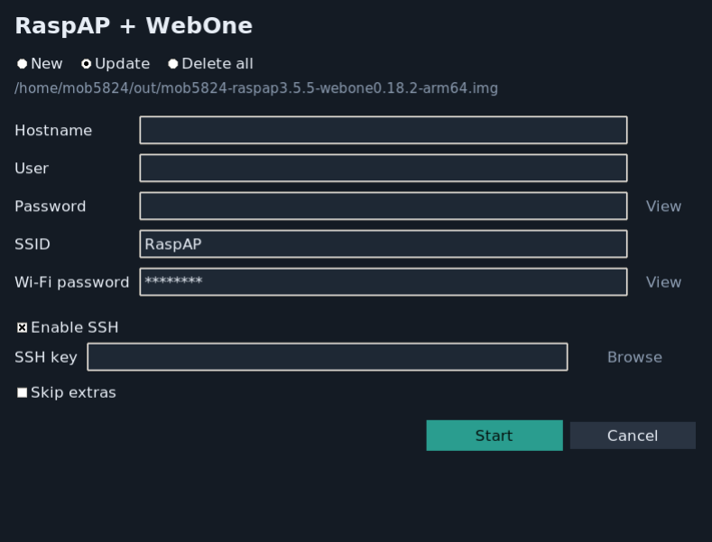

Hotspot plus proxy
Start with RaspAP Lite and add WebOne, a web proxy intended to help older browsers and devices reach more of today’s web.
Raspberry Pi · Linux · MIT
One Bash builder combines the official 64-bit RaspAP Lite image with WebOne, then writes a Raspberry Pi image you can flash. Choose a graphical window or drive the build from the terminal.

From a Debian script to a Pi
Customize the hotspot and access settings before writing the image, with progress and recovery built into the build flow.
Start with RaspAP Lite and add WebOne, a web proxy intended to help older browsers and devices reach more of today’s web.
Use the Tk interface to configure a build, or pass the same settings as CLI flags. Launchers can elevate permissions and start the required host workflow.
Set a hostname, login, hotspot name and password, Wi-Fi country, and SSH mode before the image is written. Choose password, public-key, both, or no SSH.
The builder checks GitHub release SHA-256 checksums for downloaded components unless you deliberately skip verification.
Build a fresh image, update an existing one, or rerun the same command after an interrupted build. Checkpoints help pick up where the process stopped.
Write the finished .img to a microSD card with Raspberry Pi Imager, then configure the Pi and connect the network.
From host machine to hotspot
The builder runs on a Debian or Ubuntu host, or on macOS using Docker Desktop. It needs elevated permissions and roughly 9 GB of free space for a full new build.
Set the hostname, account, Wi-Fi details, country, and SSH policy in the GUI or CLI. Check inputs before the build starts.
The script downloads and customizes the official image, installs WebOne, verifies downloads, and saves the finished image with a checksum.
Flash the image with Raspberry Pi Imager, enable any desired first-boot SSH settings, then connect to the hotspot and proxy.
Choose your own hostname, account, and Wi-Fi credentials in the build. The official RaspAP image uses a default web-admin login, so change it in RaspAP as soon as the device starts.